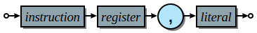
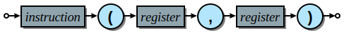
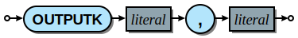

PicoBlaze architecture reference¶
This is an overview of the architecture and assembly language used for the PicoBlaze-6 and PicoBlaze-3 microcontrollers.
Instructions¶
The following instruction mnemonics are used in the PicoBlaze processors:
PicoBlaze-3 and PicoBlaze-6
PicoBlaze-6 only
Common directives
The Xilinx PicoBlaze-3 assembler only supports the address, constant, and namereg directives.
PicoBlaze-6 directives
The assembler is case insensitive for commands. Uppercase or mixed case mnemonics can also be used. Labels and renamed registers are case sensitive.
Instruction formats¶
PicoBlaze assembly follows the usual convention of having a single instruction or directive per line. An optional label creates a named reference that can be referred to by other instructions. An optional single line comment can appear at the end prefixed by a “;” character.
- Basic syntax

Blank lines are ignored. Labels and comments can be used without an instruction.
Instructions generally use the following formats with a few minor exceptions:
- Register
- Immediate
- 
- Indirect scratchpad / I/O port
- Indirect jump / call
- 
- Conditional
- Outputk
- 


The fields have the following meanings:
|
Instruction mnemonic or directive |
|
One of the 16 currently active registers (s0-sF) |
|
Constant literal (hex [nn], decimal [nnn’d], binary [nnnnnnnn’b], or char [“c”]) |
Literal syntax¶
The language supports a number of different formats for representing literal values. These are constant numeric and character values that are used as operands to many instructions.
Hexadecimal
A hex byte is the default format for literal numbers. It is represented by two hex digits with no additional syntactic marker. The address directive takes a special 12-bit hex literal as an address.
Decimal
Decimal byte values are written in the form
nnn'd.Binary
Binary byte values are written in the form
nnnnnnnn'b.Characters
Printable ASCII character literals are written in the form
"c".
You can invert the value of a literal by prefixing it with “~”.
load s0, 50 load s1, ~50 ; Same as 0xAF ; This is useful for inverting mask constants: constant BIT_FIELD_MASK, 31 or s0, BIT_FIELD_MASK ; Set bits in the mask and s0, ~BIT_FIELD_MASK ; Clear bits in the mask
There are predefined character constants for the following ASCII control characters:
NUL |
BEL |
BS |
HT |
LF |
VT |
CR |
ESC |
DEL |
DCS |
ST |
load s0, CR
output s0, COM_PORT
load s0, LF
output s0, COM_PORT
There are additional special constants containing the date and time the code was assembled:
timestamp_hours
timestamp_minutes
timestamp_seconds
datestamp_year (two digit year from 00 - 99)
datestamp_month
datestamp_day
You can access environment variables by prefixing their name with “%”. They must evaluate to a valid PicoBlaze literal.
; You could have a build script generating different images
; for multiple PicoBlaze instances. Their behavior could
; be controlled by an environment variable "PROC_NUM".
load s0, %PROC_NUM
compare s0, 00
jump Z, proc_0 ; Branch to special code for processor 0
; Remaining processors here
Note
The Opbasm command line option --define=NAME[=VALUE] can be used in conjunction with the m4 preprocesor as another way to alter code generation at build time.
Address spaces¶
The PicoBlaze has a simple architecture that operates on information stored in the following address spaces:
- Registers
A set of 16 8-bit registers. They default to the registers named s0-sF but can be renamed with the namereg directive.
The PicoBlaze-3 has a single bank of registers. PicoBlaze-6 has a second bank of 16 (bank B) that can be swapped in or out using the regbank instruction. The default register names are case-insensitive so “SA”, “sa”, “Sa”, and “sA” are all valid and refer to the same register.
All register values, flags, and the call stack are initialized to 0 on initial FPGA power up but the registers retain their values on subsequent resets. Your code should not assume registers are cleared after a reset.
- Instruction memory
Instruction words are stored in an isolated memory. It is limited to 1K on PicoBlaze-3 and selectable between 1K, 2K, or 4K on PicoBlaze-6. You can also use smaller memories for instruction storage if you don’t need to use the full address space. This memory is implemented outside the PicoBlaze core component and attached to the instruction memory port. Because the PicoBlaze is a Harvard architecture micro, this memory is not directly accessible from within your program. However, a dual ported memory can be implemented to access data stored in instruction memory or to modify instructions through the I/O port interface.
- Scratchpad memory
A small pool of RAM used as a local memory. This is 64 bytes on the PicoBlaze-3 and configurable for 64, 128, or 256 bytes on PicoBlaze-6. This memory is accessed with the fetch and store instructions.
- I/O ports
A set of 256 input and 256 output ports are used to interact with external hardware. These ports are accessed with the input and output instructions. Additional logic must be provided to decode these ports.
- Outputk ports
The PicoBlaze-6 has a special set of 16 output ports intended for directly driving constant values with minimal overhead. This is accessed with the outputk instruction.
- Call stack
A hardware call stack is maintained to track return addresses for subroutines and the interrupt handler. You can have a call depth of up to 31 subroutines on PicoBlaze-3 and 30 subroutines on PicoBlaze-6. On PB3 the stack will silently roll over if you exceed the limit. On PB6 it will detect the overflow and generate an internal reset, restarting the program from address 0x000.
Flags¶
The PicoBlaze processor has two internal status flags that represent metadata from ALU operations. They are used to evaluate the result of an operation and execute conditional code. These are the the zero “Z” flag and the carry “C” flag.
The Z flag is set when the result of an operation is zero and cleared otherwise. The C flag is set when an arithmetic carry or borrow (for subtraction) is generated. As a special case, the C flag is set by the test and testcy instructions to reflect the odd parity of their result. The hwbuild instruction always sets the C flag unconditionally.
The most common application of the flags is to execute conditional code after a compare instruction. The table shown for compare indicates how to interpret the flags for various Boolean comparison operations. Not all comparisons are possible with a single instruction because PicoBlaze can only test one flag at a time.
The return and jump have a conditional form where the first operand is a flag value of C, NC, Z, or NZ. When it is C or Z whese instructions conditionally return or jump when the respective flag is set. for NC and NZ, the branch is taken when the flag is clear.
Interrupts¶
The PicoBlaze has a single interrupt input. When interrupts are enabled and this pin transitions high, the normal execution is suspended and the processor jumps to a special interrupt handler routine. This behavior lets your code respond to external events in the FPGA fabric without having to explicitly poll for changes in state. Handling multiple interrupts requires external logic to multiplex them onto the single input provided by the PicoBlaze.
The PB3 has a fixed interrupt vector address of 0x3FF which is the last instruction in the 1K instruction memory space. You must insert a jump instruction here that branches to your ISR code. The PB6 defaults to 0x3FF as its default vector but you can change it to a different address with the interrupt_vector generic on the KCPSM6 component. This gives you the option to place the vector at the start of your ISR without the need for an extra jump.
The interrupt signal should stay high for at least two clock cycles to guarantee it is seen by the processor. An optional interrupt_ack output signal is provided to interface with external interrupt generating logic. It notifies you when the processor has started processing the interrupt, at which point it is safe to release the interrupt input signal.
Interrupts are controlled with the enable and disable instructions. They take a special dummy operand of “interrupt”. A special returni instruction is used to exit from the ISR and resume normal execution. It takes an operand of “enable” or”disable” to set the new state of the interrupt flag after the return. You cannot use the normal return instruction to accomplish this since the original interrupt saved the flag and register bank state and only returni can restore it so that your normal code remains unaffected by the change of execution state.
Directives¶
The following are the assembler directives used by Opbasm. These are special keywords used in place of machine instructions. They do not produce any code directly but are instead used to alter the behavior of the assembler.
address¶
The address directive is used to change the address where the next instruction will be assembled to.
Format |
Example |
Result |
|---|---|---|
|
address 3FF |
The instruction offset is moved to 0x3FF |
|
address MyISR |
The instruction offset is addr. of MyISR |
This allows you to place code at the interrupt vector location or implement complex memory layouts such as bank switched pages. The second variant with a label as an operand is a non-standard Opbasm extension. It is most useful for implementing an ISR with a jump for the entry point:
my_isr:
address 3FF ; Switch to interrupt vector address
jump my_isr ; Assemble instruction at interrupt vector location
address my_isr ; Resume assembly at address previously captured in "my_isr"
<ISR code>
returni
constant¶
Define a named constant. The name cannot be any 1-3 character string that is a valid hex number. Constants can be used in place of any literal operand.
Format |
Example |
Result |
|---|---|---|
|
constant foo, 5A |
The name “foo” is substituted with 0x5A |
(decimal literals) |
constant bar, 20’d |
bar is 0x14 |
(binary literals) |
constant baz, 01000010’b |
baz is 0x42 |
(char literals) |
constant bat, “0” |
bat is 0x30 |
default_jump¶
Unused instruction memory is filled with zeros by default. The PicoBlaze doesn’t know about which areas of memory are unused and will continue executing whatever instruction data is located there. On PB3 a zero instruction (0x00000) equates to “LOAD s0, 00”. On PB6 it is “LOAD s0, s0” (a NOP). These instructions can be problematic in high reliability code that needs to recover from accidentally falling into these unused areas of memory. The default_jump directive protects against this by filling unused instruction memory with a jump to a specified label or address. That jump target can be a special error handler or just reinitialize the entire program starting from address 0.
Format |
Example |
Result |
|---|---|---|
|
default_jump handle_err |
Unused memory is filled with JUMP instructions to handle_err |
(address target) |
default_jump 001 |
Fill with JUMP to address 0x001 |
include¶
The include directive lets you incorporate the contents of other source files into your final program. It inserts the contents of the specified file at the location of the directive.
Format |
Example |
Result |
|---|---|---|
|
include “lib.psm” |
The contents of lib.psm are added to the program |
inst¶
The inst directive is used to manually construct an instruction from its hex encoding. This is primarily of value for encoding non-instruction data into the instruction memory. Note that the instruction size is 18-bits so the fifth, leftmost, nibble of the hex value is truncated down to 2-bits.
Format |
Example |
Result |
|---|---|---|
|
inst 3AABB |
Place 0x3AABB at the current point in memory |
namereg¶
The namereg directive lets you rename a register mnemonic. It allows you to create more descriptive register names rather the default s0-sF. Once namereg has been applied, the affected register can only be referenced by its new name. Another call to namereg is needed to change its name again. The new name is case sensitive unlike the default where both “sn” “Sn” are accepted.
The new name takes effect after this directive. Previous references to the old register name remain valid. You can rename the register again at any point.
Format |
Example |
Result |
|---|---|---|
|
namereg sF, TEMP |
rename sF to “TEMP” |
As an alternative, the m4 macro processor used with Opbasm has a define() macro that can be used to create alternate register names without replacing the original.
string¶
Available on PicoBlaze-6 only. The string directive creates a text string. It must be used in conjunction with the load&return or outputk instructions. When a string name is an argument to these instructions they are expanded into multiple instructions with each character as their literal operand.
Format |
Example |
Result |
|---|---|---|
|
string hello$, “Hello world” |
Create string named hello$ |
The Opbasm macro package has additional methods for generating strings that are portable across PB3 and PB6.
There are three predefined strings you can reference in your PB6 code:
timestamp$ |
Build timestamp in H:M:S format |
datestamp$ |
Build datestamp in M D Y format |
Opbasm_version$ |
Opbasm assembler version |
table¶
Available on PicoBlaze-6 only. The table directive creates a data array. It must be used in conjunction with the load&return or outputk instructions. When a table name is an argument to these instructions they are expanded into multiple instructions with each byte as their literal operand.
Format |
Example |
Result |
|---|---|---|
|
table hex#, [01, 02, AA] |
Table named hex# |
|
table dec#, [50, 100, 200]’d |
Table named dec# |
|
table bin#, [11110000, 00100110]’b |
Table named bin# |
Register assignment instructions¶
PicoBlaze has a minimal set of instructions for moving data into and between registers.
load¶
The load instruction copies the value of its second argument into the register of the first argument.
This is the only way to directly set a register to an arbitrary constant value.
Format |
Example |
Result |
|---|---|---|
|
load s0, 5A |
s0 ⇐ 0x5A |
(loading other literal formats) |
load s0, 42’d |
s0 ⇐ 42 (decimal) |
(loading address fragments) |
load sA, label’lower |
sA ⇐ low byte of “label” address |
|
load s0, s2 |
s0 ⇐ s2 |
star¶
The star instruction is specific to the PicoBlaze-6. It is used to transfer register values between
register banks A and B. When executed, a register in the active bank is copied into a register in the inactive bank.
There is no way to transfer in the other direction without switching banks using regbank.
Format |
Example |
Result |
|---|---|---|
|
star s0, s3 |
(inactive bank) s0 ⇐ (active bank) s3 |
Note
star has special behavior for its first operand. Because the namereg directive can obscure the actual register locations, you can only use the default register names s0-sF for the first operand. This is the only case where the namereg directive is ignored. The second register operand follows the usual register naming behavior.
ALU instructions¶
The following set of instructions perform arithmetic and logical operations on registers.
add¶
Add two 8-bit values.
Format |
Example |
Result |
|---|---|---|
|
add s0, 5A |
s0 ⇐ s0 + 0x5A |
(adding other literal formats) |
add s0, “0” |
s0 ⇐ s0 + 0x30 |
|
add s0, s2 |
s0 ⇐ s0 + s2 |
The C flag is set if an overflow occurs. i.e. the arithmetic result is greater than 255. The Z flag is set when the result is zero.
addcy¶
Add two 8-bit values and the carry flag. This is used to extend addition to support values larger than 8-bits.
Format |
Example |
Result |
|---|---|---|
|
addcy s0, 5A |
s0 ⇐ s0 + 0x5A + C |
(adding other literal formats) |
addcy s0, 42’d |
s0 ⇐ s0 + 42 (decimal) + C |
|
addcy s0, s2 |
s0 ⇐ s0 + s2 + C |
The C flag is set if an overflow occurs. i.e. the arithmetic result is greater than 255. On PicoBlaze-6 The Z flag is set when the result is zero and the previous Z flag was set. On PicoBlaze-3 the Z flag disregards the previous state of Z.
add s0, 01
addcy s1, 00 ; Add carry bit from s0 into s1
jump Z, foo ; PB6: Jump when s1,s0 == 0x0000; PB3: Jump when s1 == 0x00
sub¶
Subtract two 8-bit values.
Format |
Example |
Result |
|---|---|---|
|
sub s0, 5A |
s0 ⇐ s0 - 0x5A |
(subtracting other literal formats) |
sub s0, “0” |
s0 ⇐ s0 - 0x30 |
|
sub s0, s2 |
s0 ⇐ s0 - s2 |
The C flag is set if an underflow occurs. i.e. the arithmetic result is less than 0. The Z flag is set when the result is zero.
subcy¶
Subtract two 8-bit values and the carry flag. This is used to extend subtraction to support values larger than 8-bits.
Format |
Example |
Result |
|---|---|---|
|
subcy s0, 5A |
s0 ⇐ s0 - 0x5A - C |
(subtracting other literal formats) |
subcy s0, 42’d |
s0 ⇐ s0 - 42 (decimal) - C |
|
subcy s0, s2 |
s0 ⇐ s0 - s2 - C |
The C flag is set if an underflow occurs. i.e. the arithmetic result is less than 0. On PicoBlaze-6 the Z flag is set when the result is zero and the previous Z flag was set. On PicoBlaze-3 the Z flag disregards the previous state of Z.
sub s0, 01
subcy s1, 00 ; Subtract with borrow from s0
jump Z, foo ; PB6: Jump when s1,s0 == 0x0000; PB3: Jump when s1 == 0x00
and¶
Perform the logical bitwise AND of two 8-bit values.
Format |
Example |
Result |
|---|---|---|
|
and s0, 5A |
s0 ⇐ s0 and 0x5A |
(anding other literal formats) |
and s0, 1011000’b |
s0 ⇐ s0 and 0xB0 |
|
and s0, s2 |
s0 ⇐ s0 and s2 |
The C flag is always cleared. The Z flag is set when the result is zero.
or¶
Perform the logical bitwise OR of two 8-bit values.
Format |
Example |
Result |
|---|---|---|
|
or s0, 5A |
s0 ⇐ s0 or 0x5A |
(oring other literal formats) |
or s0, 1011000’b |
s0 ⇐ s0 or 0xB0 |
|
or s0, s2 |
s0 ⇐ s0 or s2 |
The C flag is always cleared. The Z flag is set when the result is zero.
xor¶
Perform the logical bitwise XOR of two 8-bit values.
Format |
Example |
Result |
|---|---|---|
|
xor s0, 5A |
s0 ⇐ s0 xor 0x5A |
(xoring other literal formats) |
xor s0, 1011000’b |
s0 ⇐ s0 xor 0xB0 |
|
xor s0, s2 |
s0 ⇐ s0 xor s2 |
The C flag is always cleared. The Z flag is set when the result is zero.
Comparson instructions¶
The comparison instructions are used to compare values without modifying registers. They are only used to set and clear flags that will be inspected by subsequent instructions.
compare¶
Compare two 8-bit values. This is the same as subtraction but without modifying the first operand.
Format |
Example |
Result |
|---|---|---|
|
compare s0, 5A |
temp ⇐ s0 - 0x5A |
(comparing other literal formats) |
compare s0, “0” |
temp ⇐ s0 - 0x30 |
|
compare s0, s2 |
temp ⇐ s0 - s2 |
The C flag is set if an underflow occurs. i.e. the arithmetic result is less than 0. The Z flag is set when the result is zero.
The flags can be interpreted as follows:
Z |
C |
Meaning |
|---|---|---|
1 |
- |
= operands are equal |
0 |
- |
≠ operands are not equal |
0 |
0 |
> first is greater than second |
- |
0 |
≥ first is greater or equal to second |
- |
1 |
< first is less than second |
1 |
1 |
≤ first is less or equal to second |
Note that you cannot determine > “greater than” or ≤ “less than or equal” without inspecting both flags. It is best to structure your code to avoid these comparisons. If both operands are registers you can always swap them and use the complementary comparison operator. If the second operand is a literal you can implement “>” or “≤” by incrementing the literal and using “≥” or “<” instead. This strategy will fail, however, when the literal is 0xFF. For that case you have to rearrange your logic to avoid such comparisons.
; Loop from 0 to 0xFE with < operation load s0, 00 loop_a: <do something> add s0, 01 ; Increment counter compare s0, FF jump C, loop_a ; jump if s0 < 0xFF ; Loop from 0 to 0xFF with simulated ≤ operation load s0, 00 loop_b: <do something> add s0, 01 ; Increment counter compare s0, 00 jump NZ, loop_b ; Jump if s0 ≠ 0x00 (Same as s0 ≤ 0xFF) ; Alternatively, since overflow from 0xFF to 0x00 sets the C flag ; you can skip the compare instruction: ; Loop from 0 to 0xFF with simulated ≤ operation load s0, 00 loop_c: <do something> add s0, 01 ; Increment counter jump NC, loop_c ; Jump if s0 didn't overflow (Same as s0 ≤ 0xFF)
comparecy¶
Compare two 8-bit values with carry. Available on PicoBlaze-6 only. This is the same as subtraction with carry but without modifying the first operand. It extends comparison to support values larger than 8-bits.
Format |
Example |
Result |
|---|---|---|
|
comparecy s0, 5A |
temp ⇐ s0 - 0x5A - C |
(comparing other literal formats) |
comparecy s0, 12’d |
temp ⇐ s0 - 12 (decimal) - C |
|
comparecy s0, s2 |
temp ⇐ s0 - s2 - C |
The C flag is set if an underflow occurs. i.e. the arithmetic result is less than 0. The Z flag is set when the result is zero and the previous Z flag was set.
test¶
Perform the logical bitwise AND of two 8-bit values without modifying the first operand.
Format |
Example |
Result |
|---|---|---|
|
test s0, 5A |
temp ⇐ s0 and 0x5A |
(other literal formats) |
test s0, 1011000’b |
temp ⇐ s0 and 0xB0 |
|
test s0, s2 |
temp ⇐ s0 and s2 |
The C flag is set to the odd parity of the bits in the result (set for an odd number of ‘1’ bits). The Z flag is set when the result is zero.
This instruction is primarily used to test if certain bits in a register are set by non-destructively ANDing it with a constant mask.
constant my_mask, 02
load s0, 23
test s0, my_mask
jump NZ, bit_1_is_set
testcy¶
Perform the logical bitwise AND of two 8-bit values without modifying the first operand. Available on PicoBlaze-6 only. This extends the test instruction by combining the previous Z and C flag values into the result.
Format |
Example |
Result |
|---|---|---|
|
testcy s0, 5A |
temp ⇐ s0 and 0x5A |
(other literal formats) |
testcy s0, 1011000’b |
temp ⇐ s0 and 0xB0 |
|
testcy s0, s2 |
temp ⇐ s0 and s2 |
The C flag is set to the odd parity of the bits in the result and the previous C flag (set for an odd number of ‘1’ bits). The Z flag is set when the result is zero and the previous Z flag was set.
Shift/rotate instructions¶
Owing to space constraints, the PicoBlaze does not have a barrel shifter. This means that shifts and rotations can only be performed one bit at a time. Multiple shifts and rotates must be performed with repeated instructions. The Opbasm m4 package has macros to handle multi-bit shifts for you.
rl¶
Rotate left 1-bit.
Format |
Example |
Result |
|---|---|---|
|
rl s0 |
s0 ⇐ s0[6:0] & s0[7] |
The C flag gets the old MSB from the register. The Z flag is set if the result is zero.
rr¶
Rotate right 1-bit.
Format |
Example |
Result |
|---|---|---|
|
rr s0 |
s0 ⇐ s0[0] & s0[7:1] |
The C flag gets the old LSB from the register. The Z flag is set if the result is zero.
sl0¶
Shift left 1-bit inserting ‘0’.
Format |
Example |
Result |
|---|---|---|
|
sl0 s0 |
s0 ⇐ s0[6:0] & ‘0’ |
The C flag gets the old MSB from the register. The Z flag is set if the result is zero.
sl1¶
Shift left 1-bit inserting ‘1’.
Format |
Example |
Result |
|---|---|---|
|
sl1 s0 |
s0 ⇐ s0[6:0] & ‘1’ |
The C flag gets the old MSB from the register. The Z flag is always cleared.
sla¶
Shift left 1-bit, inserting previous C flag. This is used to extend shifts over multiple bytes.
Format |
Example |
Result |
|---|---|---|
|
sla s0 |
s0 ⇐ s0[6:0] & C |
The C flag gets the old MSB from the register. The Z flag is set if the result is zero.
sl0 s0 ; MSB -> C
sla s1 ; Shift former MSB from s0 into LSB of s1
slx¶
Shift arithmetic left 1-bit. This performs “sign-extension” of the LSB.
Format |
Example |
Result |
|---|---|---|
|
slx s0 |
s0 ⇐ s0[6:0] & s0[0] |
The C flag gets the old MSB from the register. The Z flag is set if the result is zero.
sr0¶
Shift right 1-bit inserting ‘0’.
Format |
Example |
Result |
|---|---|---|
|
sr0 s0 |
s0 ⇐ ‘0’ & s0[7:1] |
The C flag gets the old LSB from the register. The Z flag is set if the result is zero.
sr1¶
Shift right 1-bit inserting ‘1’.
Format |
Example |
Result |
|---|---|---|
|
sr1 s0 |
s0 ⇐ ‘1’ & s0[7:1] |
The C flag gets the old LSB from the register. The Z flag is set if the result is zero.
sra¶
Shift right 1-bit, inserting previous C flag. This is used to extend shifts over multiple bytes.
Format |
Example |
Result |
|---|---|---|
|
sra s0 |
s0 ⇐ C & s0[7:1] |
The C flag gets the old LSB from the register. The Z flag is set if the result is zero.
sr0 s1 ; LSB -> C
sra s0 ; Shift former LSB from s1 into MSB of s0
srx¶
Shift arithmetic right 1-bit. This performs sign-extension of the MSB.
Format |
Example |
Result |
|---|---|---|
|
srx s0 |
s0 ⇐ s0[7] & s0[7:1] |
The C flag gets the old LSB from the register. The Z flag is set if the result is zero.
load s0, F0 ; -16
sra s0 ; s0 == 0xF8 == -8
Branching instructions¶
The following instructions are used to change the flow of execution.
call¶
Execute a subroutine.
Format |
Example |
Result |
|---|---|---|
|
call my_label |
PC is saved and jump to my_label address |
(hardcoded address) |
call 12A |
PC is saved and jump to address 0x12A |
|
call Z, my_label |
Conditional call to my_label if Z flag is set |
The call instruction is similar to jump but the current program counter (PC) value is saved on the hardware stack. This allows execution to resume at the next instruction when the subroutine completes with a return instruction.
The address of the subroutine is typically provided through a label but a hardcoded 12-bit address can also be used. A conditional call can be implemented by using one of the flag codes (Z, NZ, C, NC) as the first operand. The conditional call is only made if the flag matches the state in the instruction. Otherwise execution continues with the next instruction.
call@¶
Execute a subroutine at a variable address. The target address is determined at runtime. Available on PicoBlaze-6 only.
Format |
Example |
Result |
|---|---|---|
|
call@ (s0, s1) |
PC is saved and jump to address in s0, s1 |
This is a variation of an unconditional call that takes the address from a pair of registers. It is used when you want to compute a call target address dynamically. Addresses are typically generated by initializing with the 'upper and 'lower modifiers on a known label and then adding an offset:
my_func:
<Special subroutine with multiple entry points>
return
load s0, my_func'upper ; Load upper nibble
load s1, my_func'lower ; Load lower byte
add s1, sA ; Add offset
addcy s0, 00
call@ (s0, s1) ; Branch into my_func offset by sA number of instruction words
jump¶
Jump to an address.
Format |
Example |
Result |
|---|---|---|
|
jump my_label |
Jump to my_label address |
(hardcoded address) |
jump 12A |
Jump to address 0x12A |
|
jump Z, my_label |
Conditional jump to my_label if Z flag is set |
The target address is typically provided through a label but a hardcoded address can also be used. A conditional jump can be implemented by using one of the flag codes (Z, NZ, C, NC) as the first operand. The conditional jump is only made if the flag matches the state in the instruction. Otherwise execution continues with the next instruction.
jump@¶
Jump to a variable address. The target address is determined at runtime. Available on PicoBlaze-6 only.
Format |
Example |
Result |
|---|---|---|
|
jump@ (s0, s1) |
Jump to address in s0, s1 |
This is a variation of an unconditional jump that takes the address from a pair of registers. It is used to compute a jump target address dynamically. Addresses are typically generated by initializing with the 'upper and 'lower modifiers on a label and then adding an offset.
return¶
Return from a subroutine.
Format |
Example |
Result |
|---|---|---|
|
return |
Resume execution following the last call instruction. |
|
return NZ |
Return if the Z flag is clear |
A conditional return can be implemented by using one of the flag codes (Z, NZ, C, NC) as the first operand. The conditional return is only made if the flag matches the state in the instruction. Otherwise execution continues with the next instruction.
returni¶
Return from an interrupt handler.
Format |
Example |
Result |
|---|---|---|
|
returni enable |
Resume normal execution with interrupts enabled. |
This performs an unconditional return from an interrupt handler. Interrupts are enabled or disabled based upon the required argument. The saved flags and register bank (PB6) are restored.
Memory access instructions¶
fetch¶
Fetch a byte from scratchpad RAM into a register.
Format |
Example |
Result |
|---|---|---|
|
fetch s0, 01 |
s0 ⇐ scratchpad[01] |
|
fetch s0, (sA) |
s0 ⇐ scratchpad[sA] |
store¶
Store a byte from a register into scratchpad RAM.
Format |
Example |
Result |
|---|---|---|
|
store s0, 01 |
scratchpad[01] ⇐ s0 |
|
store s0, (sA) |
scratchpad[sA] ⇐ s0 |
input¶
Read a byte from an input port into a register.
Format |
Example |
Result |
|---|---|---|
|
input s0, 01 |
s0 ⇐ in_port[01] |
|
input s0, (sA) |
s0 ⇐ in_port[sA] |
output¶
Write a byte from a register to an output port.
Format |
Example |
Result |
|---|---|---|
|
output s0, 01 |
out_port[01] ⇐ s0 |
|
output s0, (sA) |
out_port[sA] ⇐ s0 |
outputk¶
Write to a constant optimized output port. Available on PicoBlaze-6 only.
Format |
Example |
Result |
|---|---|---|
|
outputk 5A, B |
out_port[B] ⇐ 0x5A |
This writes a constant value to the dedicated outputk ports. It avoids the load, output instruction pair required to write a constant to a normal output port which is useful if you want to write static data as fast as possible. There are only 16 outputk ports: 0-F.
When the literal is a string or table name, the outputk instruction is expanded into multiple copies for each character or byte.
Miscellaneous instructions¶
disable¶
Disable interrupts.
Format |
Example |
Result |
|---|---|---|
|
disable interrupt |
Interrupts are no longer handled. |
enable¶
Enable interrupts.
Format |
Example |
Result |
|---|---|---|
|
enable interrupt |
Interrupts are handled. |
hwbuild¶
Generate the hardware build version number. Available on PicoBlaze-6 only.
Format |
Example |
Result |
|---|---|---|
|
hwbuild s0 |
s0 ⇐ hardware build number |
The C flag is always set to ‘1’. The Z flag is set when the result is zero. This is the only instruction that can set C by itself.
The build number is specified in the KCPSM6 “hwbuild” generic when it is instantiated.
load&return¶
Load a register and return. Available on PicoBlaze-6 only.
Format |
Example |
Result |
|---|---|---|
|
load&return s0, “A” |
s0 ⇐ “A” and return to caller. |
This is used to do a constant load and return in a single instruction. It is primarily used to load tables of data and strings stored in program memory accessed with a call@ instruction.
message:
load&return s0, "H"
load&return s0, "e"
load&return s0, "l"
load&return s0, "l"
load&return s0, "o"
load&return s0, NUL
...
load sA, message'upper
load sB, message'lower
loop:
call@ (sA, sB) ; Load s0 with next byte
compare s0, NUL
jump Z, done
<Do something with s0>
add sB, 01
addcy sA, 00
jump loop
done:
You ordinarily wouldn’t implement tables by manually writing each load&return instruction. The assembler has built in support for generating sequences of load&return instructions when the literal operand is the name of a defined string or table.
table my_data#, [1,2,3,8,100,200]'d
my_table:
load&return s0, my_data# ; Expands into 6 load&return instructions
string my_string$, "Hello world"
message:
load&return s0, my_string$ ; Expands into 11 load&return instructions
...
<call@ code to access my_table and message>
regbank¶
Switch between register banks. Available on PicoBlaze-6 only.
Format |
Example |
Result |
|---|---|---|
|
regbank B |
Switch to second bank of registers |
Missing instructions¶
The PicoBlaze processors have a minimal instruction set owing to their compact implementation. Some notable instructions commonly seen in other processor architectures are missing. However, it is possible to replicate their behavior with alternate instructions.
nop¶
The NOP instruction represents a no-operation that has no effect on the processor state and only adds a processing delay to following code. To get the effect of a NOP you can assign a register to itself:
load s0, s0 ; No change to registers or flags == NOP
The m4 macro package includes a nop() macro.
not¶
There is no bitwise negation instruction in PicoBlaze. Instead you can use the XOR operator’s behavior as a controlled inverter to get the same result:
xor s0, FF ; XOR with all 1's flips the bits as with NOT
The m4 macro package includes a not() macro.
negate¶
When working with signed values it is useful to negate them. In 2’s complement form, negation is the same as inversion and add 1 so we combine the NOT operation with an increment to create a numeric negate:
xor s0, FF add s0, 01 ; s0 = -s0
The m4 macro package includes a negate() macro.